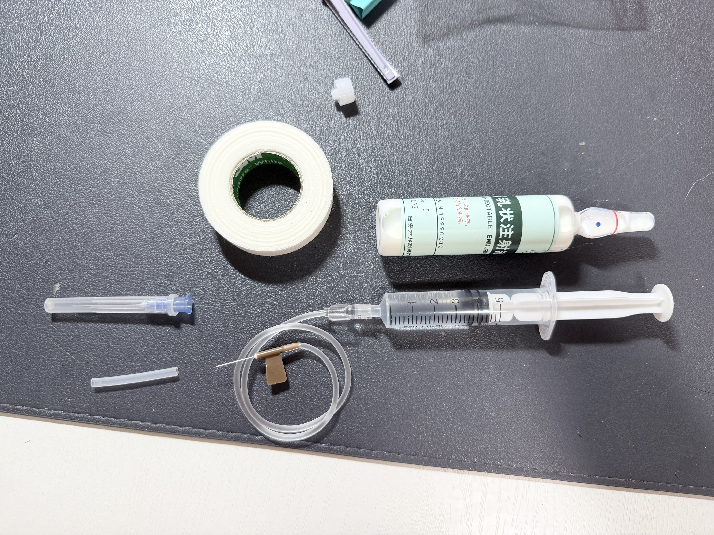
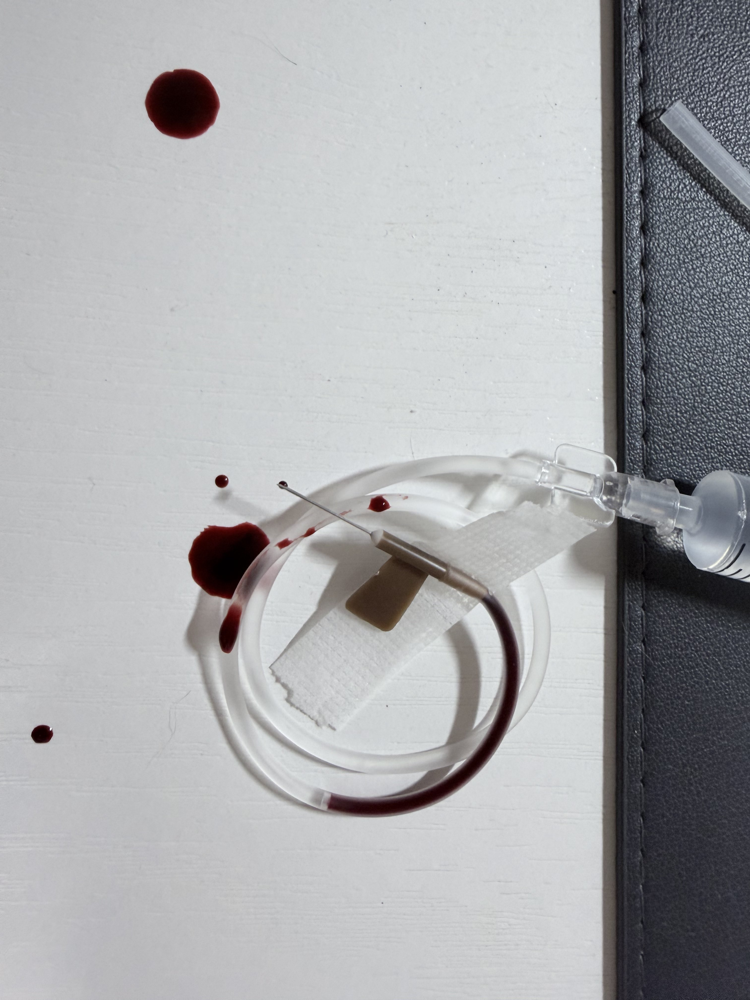
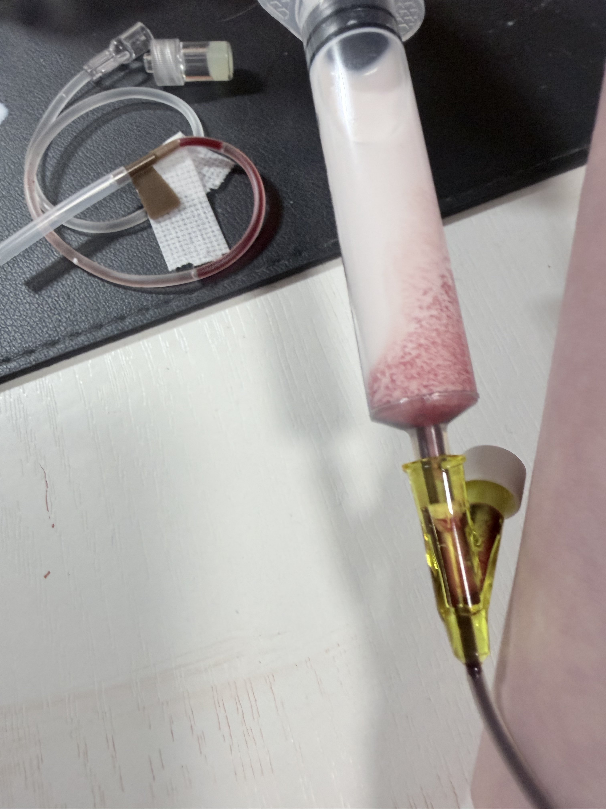
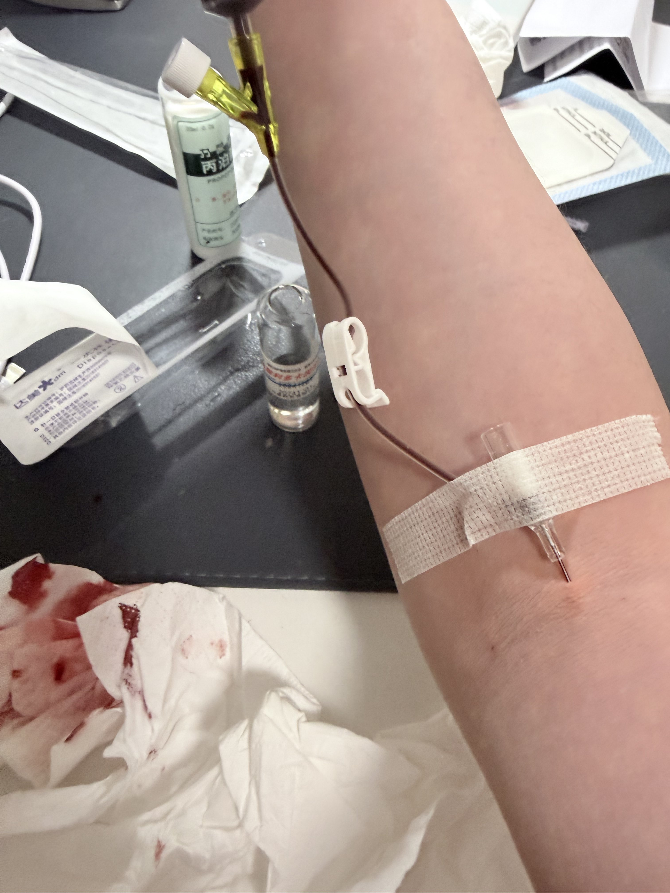

炽烈已极
@AnIncandescence
applewatch当止血带用蹭上血了吧👐早晚的事。




炽烈已极
@AnIncandescence
TEST FROPOFOL
果然蝴蝶针会翻车，太难用了。
最后用了留置针，推2ml.
本来是1ml，但忘记关闸血液回流，我怕把针管堵了于是又推了1ml
*我竟然无师自通留置针了！用的肘静脉因为其他地方被蝴蝶针霍霍了
提前推了利多卡因（也是测试倒抽）所以毫无痛感，耶
配合另一种麻醉就可以无痛重开了（bushi） https://t.co/Uj139Q2tBk